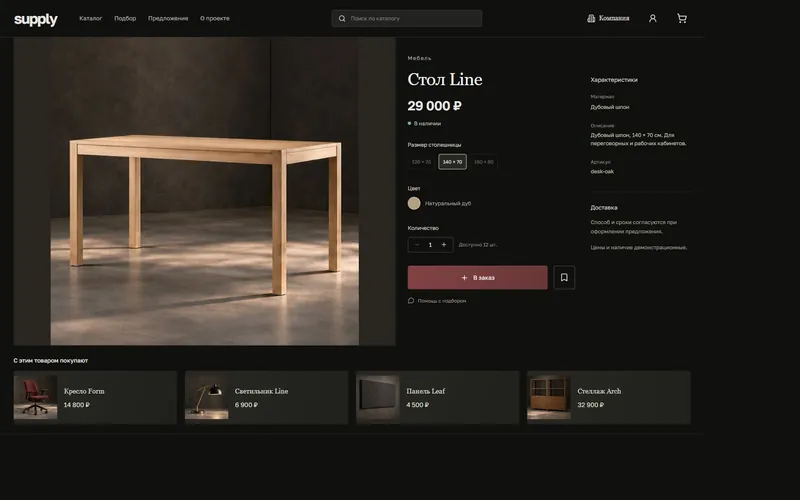
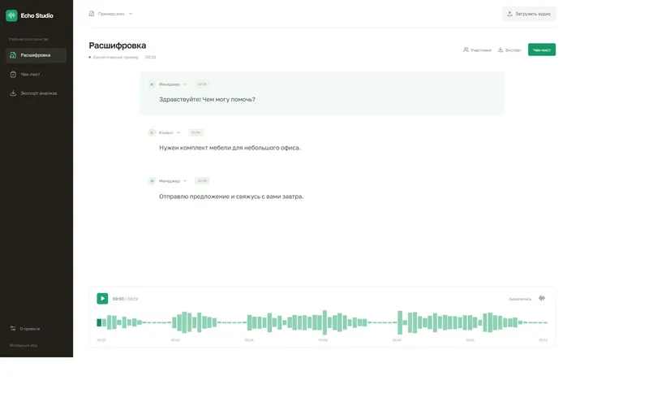

Echo Studio
Код на GitHubРасшифровка аудио, навигация по репликам и проверка текста по чек-листу.
Python / React / faster-whisper
Открыт к удалённой работе
Разработчик Python
и веб-приложений
Разрабатываю веб-сервисы, CRM и ботов. Подключаю AI и автоматизирую бизнес-процессы. Веду проект от идеи до работающего результата.


Примеры интерфейсов и разработки с открытым кодом
Расшифровка аудио, навигация по репликам и проверка текста по чек-листу.
Python / React / faster-whisper
Каталог мебели с AI-помощником для подбора товаров и расчётом предложения.
Python / React / Codex CLI
Обработка заявок по заданному сценарию, история выполнения и повтор шага после ошибки.
Python / React Flow / SQLite
Редактор коротких видео: выбор фрагмента, добавление титров и экспорт вертикального ролика.
Python / React / FFmpeg
CRM туристической команды: заявки и бронирования, карточки клиентов и мобильный маршрут гида с отметками участников.
React / Node.js / PostgreSQL
Реестр договоров, счетов и актов: поиск, согласование, история изменений, архив и выгрузка в CSV.
React / Node.js / PostgreSQL
Сказочная оранжерея с живым фоном и любопытным котом. Персонаж реагирует на движение курсора и приветствует посетителя по нажатию.
JavaScript / WebGL / Анимация
Выберите задачу — расскажу о подходе и подходящих инструментах
Когда таблиц и готовых сервисов уже недостаточно, нужен инструмент под процессы вашей команды. Разрабатываю серверную часть, интерфейсы и интеграции в одном проекте.
Подробнее об услугеОбъединяю сервисы, между которыми сотрудники переносят данные вручную. Настраиваю сценарии на n8n и Make, а для нестандартной логики пишу код на Python.
Подробнее об услугеДорабатываю Битрикс24 под рабочие задачи: от формы заявки и обмена данными до приложения с отдельным интерфейсом. Помогаю связать CRM с сайтом и внешними системами.
Подробнее об услугеСоздаю ботов и мини-приложения для конкретного действия: оставить заявку, получить информацию, работать с каталогом или запустить рабочий процесс прямо из Telegram.
Подробнее об услугеСоздаю системы, которые помогают командам работать с клиентами, данными и ежедневными задачами.
Веду проект от идеи до реализации: обсуждаем задачу и цели, проектирую интерфейс, разрабатываю серверную часть и интеграции, запускаю готовое решение. Мой опыт - коммерческие веб-сервисы, CRM, боты, речевая аналитика и AI-автоматизация. Работал в команде и самостоятельно, создавал новые продукты и развивал существующие.
Python, FastAPI, Django, PostgreSQL, RabbitMQ, Redis, Celery
JavaScript, TypeScript, React, дизайн веб- и мобильных интерфейсов
AI-автоматизация бизнес-процессов, боты, n8n, языковые модели, распознавание речи
Docker, Git, CI/CD, настройка серверов
Опыт командной и проектной разработки: РАНХиГС, Top 3D Shop, Речеметрика и Unique China.
Переработал сервис речевой аналитики: подключил телефонию, распознавание речи, классификацию звонков и оценку по чек-листам. Собрал интерфейс с результатами анализа, настроил повторную обработку записей и автоматическое обновление сервиса.
Создавал ботов, мини-приложения и автоматизацию для сбора данных, отчётов и уведомлений. Подключал AI для обработки информации и взаимодействия с пользователями. Объединял таблицы, мессенджеры и внешние сервисы.
Разрабатывал CRM под задачи бизнеса, приложения и интеграции для Битрикс, административные панели и платёжные виджеты. Создавал и реализовывал веб- и мобильные интерфейсы.
Курсы по разработке, данным и инфраструктуре